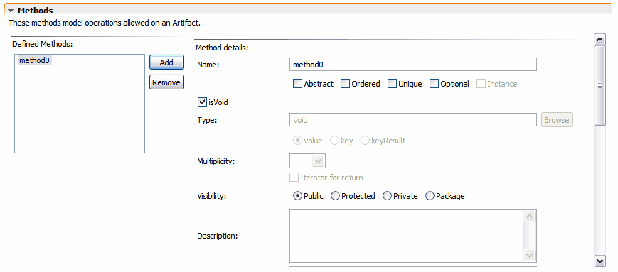

Artifact Methods
To edit Artifact methods, expand the Methods section in the Tigerstripe Artifact editor. The Methods section is shown below:

Note :Not all Artifact Types support Methods.
To add a method:
- Click Add. A sample method is created and the detailed information for the newly created method displays in the Artifact editor.
To remove a method:
- Select a method from the list of defined methods.
- Click Remove. A confirmation dialog appears to confirm the removal of the selected method.
To edit a method:
- Select the method from the list of defined methods.
The detailed view for the selected constant displays. You can edit the following method information:
To reorder methods:
- Select the method from the list of methods. Use the Up and Down buttons to place the method in the required position in the list of methods. Clicking on the heading of the table will sort the list alphabetically, clicking it again will sort the list in reverse alphabetical order. Note that not all generators will necessarily use the order in a particular manner.
Related Topics
Creating Artifacts
Editing Artifacts
Artifact Attributes
Artifact Literals
© copyright 2005, 2006, 2007 Cisco Systems, Inc. - All rights reserved